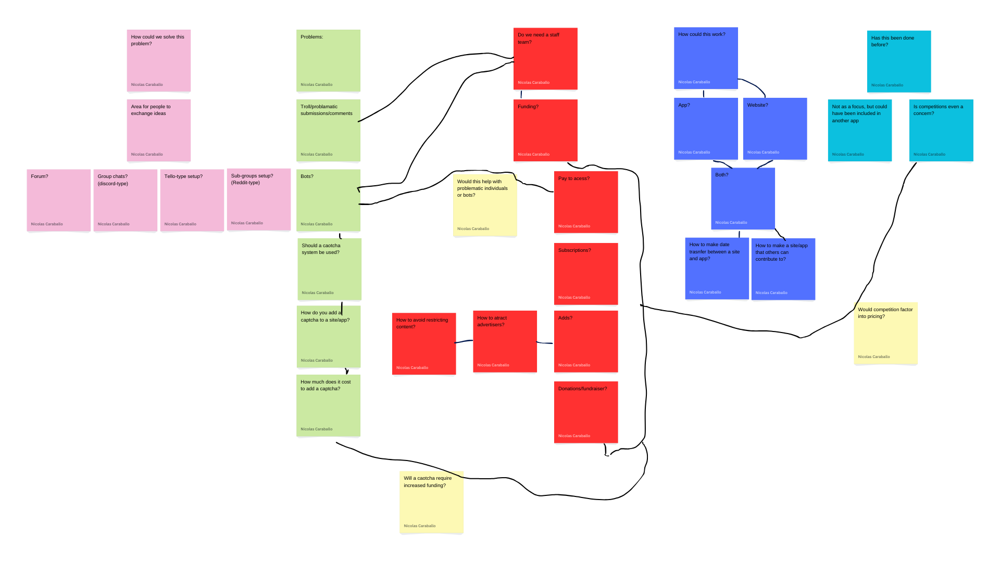

Problem Statement

Many have times when they want or need to be creative but lack the personal skills or peers to do so.
Affinity Diagram
A posterboard-style depiction of various issues/topics that will need adressing as the project goes on. There are various secions adressing potential solutions to the problem, problems, how I would have to support the project, how could the project actually be made, whether or not there are competition, and connecting points.
Sketches
These sketches show the basic navigation of the site for someone seeking help with a work of their, someone contributing to another's work, and a moderator taking down a problematic post.